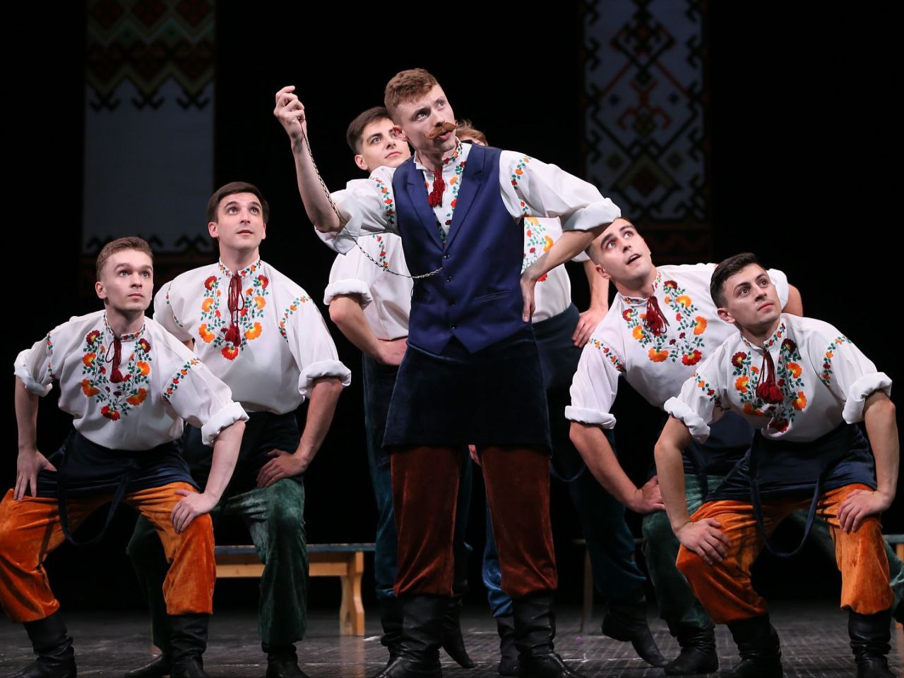
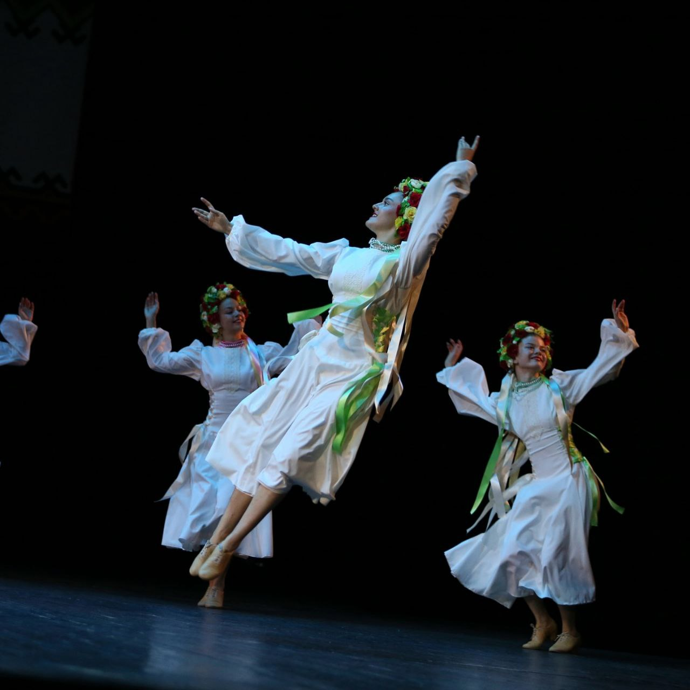
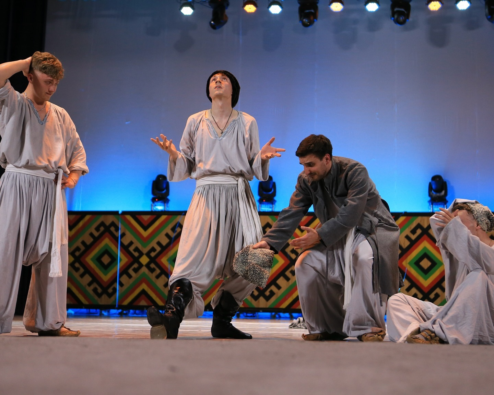

Добрий день сімейство Веселих черевичок, даний сайт був створений для онлайн перегляду відео і вивчення танців у дома. Тут ви можете згадати всі ті рухи, які колись вивчили… або думали, що вивчили. Потренуватися, похизуватися перед котом або зробити вигляд, що ніхто не бачив, як ви щойно спіткнулися. Ми поруч, навіть якщо ви танцюєте на кухні в капцях і піжамі. І так, цей текст написав штучний інтелект. Навіть він у шоці, що ви це читаєте — бо всі зазвичай одразу тиснуть «PLAY» на відео. Тож гайда рухатись! Бо танець сам себе не станцює!!!!




